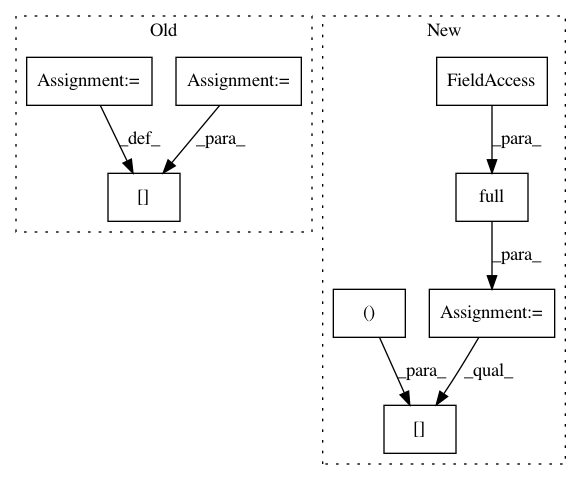

10a2ef19ee3851f2bd5aa6bc1b9d9cee3b03e5f4,src/spn/structure/leaves/histogram/Gradients.py,,histogramm_gradient,#Any#Any#Any#,9
Before Change
breaks = node.breaks
nd = data[:, node.scope[0]]
marg_ids = np.isnan(nd)
locs = np.searchsorted(breaks, nd)
probs_left = histogram_ll(node.breaks, np.array(node.densities), locs - 1)
probs_center = histogram_ll(node.breaks, np.array(node.densities), locs)
probs_right = histogram_ll(node.breaks, np.array(node.densities), locs + 1)
gradients = ((probs_center - probs_left) + probs_right - probs_center) / 2
gradients[marg_ids] = np.nan
return gradients.reshape((-1, 1))
After Change
data = input_vals
breaks = node.breaks
gradient = np.full(input_vals.shape, np.nan)
nd = data[:, node.scope[0]]
locs = np.searchsorted(breaks, nd)
probs_left = histogram_ll(node.breaks, np.array(node.densities), locs - 1)
probs_center = histogram_ll(node.breaks, np.array(node.densities), locs)
probs_right = histogram_ll(node.breaks, np.array(node.densities), locs + 1)
gradient[:, node.scope] = (((probs_center - probs_left) + probs_right - probs_center) / 2).reshape(-1, 1)
return gradient
In pattern: SUPERPATTERN
Frequency: 3
Non-data size: 8
Instances
Project Name: SPFlow/SPFlow
Commit Name: 10a2ef19ee3851f2bd5aa6bc1b9d9cee3b03e5f4
Time: 2018-12-06
Author: claas@voelcker.net
File Name: src/spn/structure/leaves/histogram/Gradients.py
Class Name:
Method Name: histogramm_gradient
Project Name: kengz/SLM-Lab
Commit Name: 8c17debc9dc6552da8c317c0c852b55f03c80c61
Time: 2017-12-24
Author: kengzwl@gmail.com
File Name: slm_lab/experiment/monitor.py
Class Name: AEBSpace
Method Name: init_body_space
Project Name: SPFlow/SPFlow
Commit Name: 10a2ef19ee3851f2bd5aa6bc1b9d9cee3b03e5f4
Time: 2018-12-06
Author: claas@voelcker.net
File Name: src/spn/structure/leaves/piecewise/Gradients.py
Class Name:
Method Name: piecewise_gradient